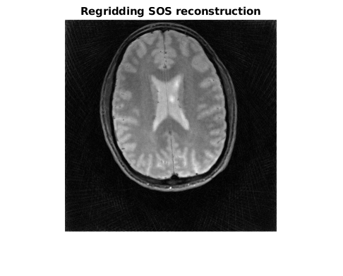
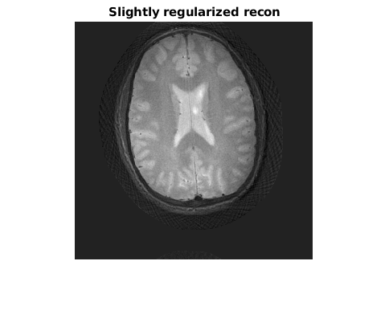
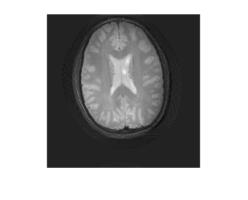
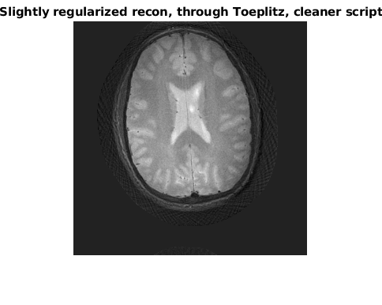
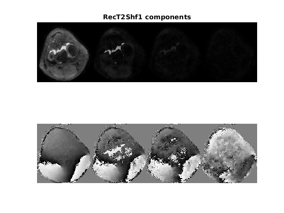

Contents
Load data
rawdata_real = h5read('rawdata_brain_radial_96proj_12ch.h5','/rawdata'); trajectory = h5read('rawdata_brain_radial_96proj_12ch.h5','/trajectory'); rawdata = rawdata_real.r+1i*rawdata_real.i; clear rawdata_real; rawdata = permute(rawdata,[4,3,2,1]); % Dimension convention of BART trajectory = permute(trajectory,[3,2,1]); % Dimension convention of BART [~,nFE,nSpokes,nCh] = size(rawdata); disp('Loaded data');
Loaded data
Demo: NUFFT reconstruction with BART
inverse gridding
img_igrid = bart('nufft -i -t', trajectory, rawdata); % channel combination img_igrid_sos = bart('rss 8', img_igrid);
Est. image size: 300 300 1 itop_apply!! Done.
Display results
figure; imshow(fliplr(flipud(img_igrid_sos)),[]); title('Regridding SOS reconstruction');
 get sens maps
FF=bart('fft 7',img_igrid); calib = bart(['ecalib -r ' num2str(20)], FF); Sens = bart('slice 4 0', calib);
dimc:[ 15 15 1 1 6 6 1 12 ] Done.
Running the linear operator script
The linopScript command runs a script file. It needs the size of the input tensor. In this case, the script is just applying the sensitivity maps, followed by applying nufft. The script is therefore: ----- nuftScript.txt ----- # fmac with file #1 - the sensitity maps, and no squashing # Then NUFT according to the trajectory in file #0 (no weights file, basis file, etc. NUFFT flags 7). fmac 1 0 nufft 0 -1 -1 7 0 0 0 0
Sz=size(img_igrid_sos); Sz16=FillOnesTo16(Sz); ScriptFN=[BaseP 'nuftScript.txt']; NUFT=bart(['linopScript ' ScriptFN],Sz16,img_igrid_sos,trajectory,Sens); NUFTA=bart(['linopScript -A ' ScriptFN],Sz16,rawdata,trajectory,Sens);
main_linopScript AAA 6 linopScript /autofs/space/daisy_002/users/Gilad/gUM/nuftScript.txt /tmp/tp97d3dfc0_1c14_44b0_916f_004b1a687ba2in1 /tmp/tp97d3dfc0_1c14_44b0_916f_004b1a687ba2in2 Out: /tmp/tp97d3dfc0_1c14_44b0_916f_004b1a687ba2out1 BBB Reading files Reading /tmp/tp97d3dfc0_1c14_44b0_916f_004b1a687ba2in3: 3 512 96 1 1 1 1 1 1 1 1 1 1 1 1 1 Reading /tmp/tp97d3dfc0_1c14_44b0_916f_004b1a687ba2in4: 300 300 1 12 1 1 1 1 1 1 1 1 1 1 1 1 Finished reading files input dims: /tmp/tp97d3dfc0_1c14_44b0_916f_004b1a687ba2in2 XXXXXXXXXXXXXX inputDims_dims: [ 1 16 1 1 1 1 1 1 1 1 1 1 1 1 1 1 ] input_dims: [300 300 1 1 1 1 1 1 1 1 1 1 1 1 1 1 ] Reading script: getLinopScriptFromFile start # fmac with file #1 - the sensitity maps, and no squashing # Then NUFT according to the trajectory in file #0 (no weights file, basis file, etc. NUFFT flags 7). Linop 0: Adding: FMAC with file #1 squash flag 0 [300 300 1 1 1 1 1 1 1 1 1 1 1 1 1 1 ] [300 300 1 12 1 1 1 1 1 1 1 1 1 1 1 1 ] OutDims: [300 300 1 12 1 1 1 1 1 1 1 1 1 1 1 1 ] Linop 1: Adding: NUFFT with file #0 Weights file -1 Basis file -1 Flags 7 Toeplitz 0 pcycle 0 periodic 0 lowmem 0 ----------- NUFFT Trajectory should be [3, Readout, Spokes] !!! [300 300 1 12 1 1 1 1 1 1 1 1 1 1 1 1 ] [ 3 512 96 1 1 1 1 1 1 1 1 1 1 1 1 1 ] OutDims: [ 1 512 96 12 1 1 1 1 1 1 1 1 1 1 1 1 ] Freeing 2 linops FreeLinops done getLinopScriptFromFile end Applying the operator From linop out:[ 1 512 96 12 1 1 1 1 1 1 1 1 1 1 1 1 ] Saving output Clearing files' memory Clearing /tmp/tp97d3dfc0_1c14_44b0_916f_004b1a687ba2in3 Clearing /tmp/tp97d3dfc0_1c14_44b0_916f_004b1a687ba2in4 Finished Clearing files' memory main_linopScript AAA 6 linopScript /autofs/space/daisy_002/users/Gilad/gUM/nuftScript.txt /tmp/tpfa8cb667_6b15_4755_b24a_9502bf2f9839in1 /tmp/tpfa8cb667_6b15_4755_b24a_9502bf2f9839in2 Out: /tmp/tpfa8cb667_6b15_4755_b24a_9502bf2f9839out1 BBB Reading files Reading /tmp/tpfa8cb667_6b15_4755_b24a_9502bf2f9839in3: 3 512 96 1 1 1 1 1 1 1 1 1 1 1 1 1 Reading /tmp/tpfa8cb667_6b15_4755_b24a_9502bf2f9839in4: 300 300 1 12 1 1 1 1 1 1 1 1 1 1 1 1 Finished reading files input dims: /tmp/tpfa8cb667_6b15_4755_b24a_9502bf2f9839in2 XXXXXXXXXXXXXX inputDims_dims: [ 1 16 1 1 1 1 1 1 1 1 1 1 1 1 1 1 ] input_dims: [300 300 1 1 1 1 1 1 1 1 1 1 1 1 1 1 ] Reading script: getLinopScriptFromFile start # fmac with file #1 - the sensitity maps, and no squashing # Then NUFT according to the trajectory in file #0 (no weights file, basis file, etc. NUFFT flags 7). Linop 0: Adding: FMAC with file #1 squash flag 0 [300 300 1 1 1 1 1 1 1 1 1 1 1 1 1 1 ] [300 300 1 12 1 1 1 1 1 1 1 1 1 1 1 1 ] OutDims: [300 300 1 12 1 1 1 1 1 1 1 1 1 1 1 1 ] Linop 1: Adding: NUFFT with file #0 Weights file -1 Basis file -1 Flags 7 Toeplitz 0 pcycle 0 periodic 0 lowmem 0 ----------- NUFFT Trajectory should be [3, Readout, Spokes] !!! [300 300 1 12 1 1 1 1 1 1 1 1 1 1 1 1 ] [ 3 512 96 1 1 1 1 1 1 1 1 1 1 1 1 1 ] OutDims: [ 1 512 96 12 1 1 1 1 1 1 1 1 1 1 1 1 ] Freeing 2 linops FreeLinops done getLinopScriptFromFile end Applying the operator - adjoint Saving output Clearing files' memory Clearing /tmp/tpfa8cb667_6b15_4755_b24a_9502bf2f9839in3 Clearing /tmp/tpfa8cb667_6b15_4755_b24a_9502bf2f9839in4 Finished Clearing files' memory
Running picsS
picsS is pics modified to run on linop scripts.
Rec=bart(['picsS -m -R Q:0.00001 ' ScriptFN],Sz16,rawdata,trajectory,Sens); figure; imshow(fliplr(flipud(Rec)),[]); title('Slightly regularized recon'); trajectoryCombined=reshape(trajectory,3,[]); rawdataCombined=reshape(rawdata,1,[],12); % SnufftStruct = nufft_init(BART2Fes_NUFT_Idxs(trajectoryCombined(1:2,:),Sz), Sz, [6 6], Sz*2); % Kern=NUFFT_to_Toep_2blocks(SnufftStruct); load(['RadialDemo.mat'],'Kern');
main_picsS Reading files Reading /tmp/tpe40ec16e_0d33_4cb2_852f_888aec5f90c1in3: 3 512 96 1 1 1 1 1 1 1 1 1 1 1 1 1 Reading /tmp/tpe40ec16e_0d33_4cb2_852f_888aec5f90c1in4: 300 300 1 12 1 1 1 1 1 1 1 1 1 1 1 1 Finished reading files CurDims:[300 300 1 1 1 1 1 1 1 1 1 1 1 1 1 1 ] getLinopScriptFromFile start # fmac with file #1 - the sensitity maps, and no squashing # Then NUFT according to the trajectory in file #0 (no weights file, basis file, etc. NUFFT flags 7). Linop 0: Adding: FMAC with file #1 squash flag 0 [300 300 1 1 1 1 1 1 1 1 1 1 1 1 1 1 ] [300 300 1 12 1 1 1 1 1 1 1 1 1 1 1 1 ] OutDims: [300 300 1 12 1 1 1 1 1 1 1 1 1 1 1 1 ] Linop 1: Adding: NUFFT with file #0 Weights file -1 Basis file -1 Flags 7 Toeplitz 0 pcycle 0 periodic 0 lowmem 0 ----------- NUFFT Trajectory should be [3, Readout, Spokes] !!! [300 300 1 12 1 1 1 1 1 1 1 1 1 1 1 1 ] [ 3 512 96 1 1 1 1 1 1 1 1 1 1 1 1 1 ] OutDims: [ 1 512 96 12 1 1 1 1 1 1 1 1 1 1 1 1 ] Freeing 2 linops FreeLinops done getLinopScriptFromFile end Read forward script. dimsAfterF:[300 300 1 1 1 1 1 1 1 1 1 1 1 1 1 1 ] OK linop script reading img_dims:[300 300 1 1 1 1 1 1 1 1 1 1 1 1 1 1 ] Inverse scaling of the data: 0.004186 Opening output file /tmp/tpe40ec16e_0d33_4cb2_852f_888aec5f90c1in1 [300 300 1 1 1 1 1 1 1 1 1 1 1 1 1 1 ] Opening output file OK Preparing prox funcs l2 regularization: 0.000010 ADMM Preparing operator sense_recon_create sense_recon_create pattern Now applying itop_apply!! Now freeing Total Time: 11.562458 Clearing files' memory Clearing /tmp/tpe40ec16e_0d33_4cb2_852f_888aec5f90c1in3 Clearing /tmp/tpe40ec16e_0d33_4cb2_852f_888aec5f90c1in4 Finished Clearing files' memory Warning: Displaying real part of complex input.
Defining a normal operator
Sometimes the Normal operator can be calculated faster than forward+adjoint, as in the case of nufft using Toeplitz embedding. This script file defines the normal operator specificaly (the lines below the NORMAL title): --- nuftScriptN.txt ----- fmac 1 0 # this is linop #0 nufft 0 -1 -1 7 0 0 0 0 NORMAL 000 f 0 # this is calling the forward of linop #0 defined above dblsz 3 # padding fft 3 fmac 2 0 # This is multplication with the Toeplitz-based kernel ifft 3 halfsz 3 a 0 # this is the adjoint of linop #0 defined above
ScriptFN_T=[BaseP 'nuftScriptN.txt']; RecT=bart(['picsS -m -R Q:0.00001 ' ScriptFN_T],Sz16,rawdata,trajectory,Sens,Kern); figure; imshow(fliplr(flipud(RecT)),[]); title('Slightly regularized recon, through Toeplitz'); % In this script file we take more use of the ability to call previously % defined linops ScriptFN_T2=[BaseP 'nuftScriptN2.txt']; RecT2=bart(['picsS -m -R Q:0.00001 ' ScriptFN_T2],Sz16,rawdata,trajectory,Sens,Kern); figure; imshow(fliplr(flipud(RecT2)),[]); title('Slightly regularized recon, through Toeplitz, cleaner script');
main_picsS Reading files Reading /tmp/tpbda5ae90_2918_46a7_9892_a1d26dfe2849in3: 3 512 96 1 1 1 1 1 1 1 1 1 1 1 1 1 Reading /tmp/tpbda5ae90_2918_46a7_9892_a1d26dfe2849in4: 300 300 1 12 1 1 1 1 1 1 1 1 1 1 1 1 Reading /tmp/tpbda5ae90_2918_46a7_9892_a1d26dfe2849in5: 600 600 1 1 1 1 1 1 1 1 1 1 1 1 1 1 Finished reading files CurDims:[300 300 1 1 1 1 1 1 1 1 1 1 1 1 1 1 ] getLinopScriptFromFile start Linop 0: Adding: FMAC with file #1 squash flag 0 [300 300 1 1 1 1 1 1 1 1 1 1 1 1 1 1 ] [300 300 1 12 1 1 1 1 1 1 1 1 1 1 1 1 ] OutDims: [300 300 1 12 1 1 1 1 1 1 1 1 1 1 1 1 ] Linop 1: Adding: NUFFT with file #0 Weights file -1 Basis file -1 Flags 7 Toeplitz 0 pcycle 0 periodic 0 lowmem 0 ----------- NUFFT Trajectory should be [3, Readout, Spokes] !!! [300 300 1 12 1 1 1 1 1 1 1 1 1 1 1 1 ] [ 3 512 96 1 1 1 1 1 1 1 1 1 1 1 1 1 ] OutDims: [ 1 512 96 12 1 1 1 1 1 1 1 1 1 1 1 1 ] --------- Moving to normal ---------------- Adding forward of linop #0 CurDims: [300 300 1 1 1 1 1 1 1 1 1 1 1 1 1 1 ] LinopIdx dims: [ 16 38120496 38120640 8 0 145 300 300 1 1 1 1 1 1 1 1 ] [ 16 38120160 38120304 8 0 145 300 300 1 12 1 1 1 1 1 1 ] Linop 2: Adding: dblsz flags #3 dbl_dims: [600 600 1 12 1 1 1 1 1 1 1 1 1 1 1 1 ] OutDims: [600 600 1 12 1 1 1 1 1 1 1 1 1 1 1 1 ] Linop 3: Adding: FFT with flag 3 OutDims: [600 600 1 12 1 1 1 1 1 1 1 1 1 1 1 1 ] Linop 4: Adding: FMAC with file #2 squash flag 0 [600 600 1 12 1 1 1 1 1 1 1 1 1 1 1 1 ] [600 600 1 1 1 1 1 1 1 1 1 1 1 1 1 1 ] OutDims: [600 600 1 12 1 1 1 1 1 1 1 1 1 1 1 1 ] Linop 5: Adding: IFFT with flag 3 OutDims: [600 600 1 12 1 1 1 1 1 1 1 1 1 1 1 1 ] Linop 6: Adding: halfsz flags #3 half_dims: [300 300 1 12 1 1 1 1 1 1 1 1 1 1 1 1 ] OutDims: [300 300 1 12 1 1 1 1 1 1 1 1 1 1 1 1 ] Adding adjoint of linop #0 CurDims: [300 300 1 12 1 1 1 1 1 1 1 1 1 1 1 1 ] LinopIdx dims: [300 300 1 1 1 1 1 1 1 1 1 1 1 1 1 1 ] [300 300 1 12 1 1 1 1 1 1 1 1 1 1 1 1 ] chain Freeing 7 linops FreeLinops done getLinopScriptFromFile end Read forward script. dimsAfterF:[300 300 1 1 1 1 1 1 1 1 1 1 1 1 1 1 ] OK linop script reading img_dims:[300 300 1 1 1 1 1 1 1 1 1 1 1 1 1 1 ] Inverse scaling of the data: 0.004186 Opening output file /tmp/tpbda5ae90_2918_46a7_9892_a1d26dfe2849in1 [300 300 1 1 1 1 1 1 1 1 1 1 1 1 1 1 ] Opening output file OK Preparing prox funcs l2 regularization: 0.000010 ADMM Preparing operator sense_recon_create sense_recon_create pattern Now applying itop_apply!! Now freeing Total Time: 9.101176 Clearing files' memory Clearing /tmp/tpbda5ae90_2918_46a7_9892_a1d26dfe2849in3 Clearing /tmp/tpbda5ae90_2918_46a7_9892_a1d26dfe2849in4 Clearing /tmp/tpbda5ae90_2918_46a7_9892_a1d26dfe2849in5 Finished Clearing files' memory Warning: Displaying real part of complex input. main_picsS Reading files Reading /tmp/tp7dcc5e28_26e6_42db_93e3_51b9ccbebed6in3: 3 512 96 1 1 1 1 1 1 1 1 1 1 1 1 1 Reading /tmp/tp7dcc5e28_26e6_42db_93e3_51b9ccbebed6in4: 300 300 1 12 1 1 1 1 1 1 1 1 1 1 1 1 Reading /tmp/tp7dcc5e28_26e6_42db_93e3_51b9ccbebed6in5: 600 600 1 1 1 1 1 1 1 1 1 1 1 1 1 1 Finished reading files CurDims:[300 300 1 1 1 1 1 1 1 1 1 1 1 1 1 1 ] getLinopScriptFromFile start Linop 0: Adding: FMAC with file #1 squash flag 0 [300 300 1 1 1 1 1 1 1 1 1 1 1 1 1 1 ] [300 300 1 12 1 1 1 1 1 1 1 1 1 1 1 1 ] OutDims: [300 300 1 12 1 1 1 1 1 1 1 1 1 1 1 1 ] Linop 1: Adding: NUFFT with file #0 Weights file -1 Basis file -1 Flags 7 Toeplitz 0 pcycle 0 periodic 0 lowmem 0 ----------- NUFFT Trajectory should be [3, Readout, Spokes] !!! [300 300 1 12 1 1 1 1 1 1 1 1 1 1 1 1 ] [ 3 512 96 1 1 1 1 1 1 1 1 1 1 1 1 1 ] OutDims: [ 1 512 96 12 1 1 1 1 1 1 1 1 1 1 1 1 ] --------- Moving to normal ---------------- Adding forward of linop #0 CurDims: [300 300 1 1 1 1 1 1 1 1 1 1 1 1 1 1 ] LinopIdx dims: [ 16 31349888 31350032 8 0 145 300 300 1 1 1 1 1 1 1 1 ] [ 16 31349552 31349696 8 0 145 300 300 1 12 1 1 1 1 1 1 ] # print 45 Linop 2: Adding: dblsz flags #3 dbl_dims: [600 600 1 12 1 1 1 1 1 1 1 1 1 1 1 1 ] OutDims: [600 600 1 12 1 1 1 1 1 1 1 1 1 1 1 1 ] Linop 3: Adding: FFT with flag 3 OutDims: [600 600 1 12 1 1 1 1 1 1 1 1 1 1 1 1 ] Linop 4: Adding: FMAC with file #2 squash flag 0 [600 600 1 12 1 1 1 1 1 1 1 1 1 1 1 1 ] [600 600 1 1 1 1 1 1 1 1 1 1 1 1 1 1 ] OutDims: [600 600 1 12 1 1 1 1 1 1 1 1 1 1 1 1 ] Adding adjoint of linop #3 CurDims: [600 600 1 12 1 1 1 1 1 1 1 1 1 1 1 1 ] LinopIdx dims: [600 600 1 12 1 1 1 1 1 1 1 1 1 1 1 1 ] [600 600 1 12 1 1 1 1 1 1 1 1 1 1 1 1 ] chain Adding adjoint of linop #2 CurDims: [600 600 1 12 1 1 1 1 1 1 1 1 1 1 1 1 ] LinopIdx dims: [300 300 1 12 1 1 1 1 1 1 1 1 1 1 1 1 ] [600 600 1 12 1 1 1 1 1 1 1 1 1 1 1 1 ] chain Adding adjoint of linop #0 CurDims: [300 300 1 12 1 1 1 1 1 1 1 1 1 1 1 1 ] LinopIdx dims: [300 300 1 1 1 1 1 1 1 1 1 1 1 1 1 1 ] [300 300 1 12 1 1 1 1 1 1 1 1 1 1 1 1 ] chain Freeing 5 linops FreeLinops done getLinopScriptFromFile end Read forward script. dimsAfterF:[300 300 1 1 1 1 1 1 1 1 1 1 1 1 1 1 ] OK linop script reading img_dims:[300 300 1 1 1 1 1 1 1 1 1 1 1 1 1 1 ] Inverse scaling of the data: 0.004186 Opening output file /tmp/tp7dcc5e28_26e6_42db_93e3_51b9ccbebed6in1 [300 300 1 1 1 1 1 1 1 1 1 1 1 1 1 1 ] Opening output file OK Preparing prox funcs l2 regularization: 0.000010 ADMM Preparing operator sense_recon_create sense_recon_create pattern Now applying itop_apply!! Now freeing Total Time: 9.580180 Clearing files' memory Clearing /tmp/tp7dcc5e28_26e6_42db_93e3_51b9ccbebed6in3 Clearing /tmp/tp7dcc5e28_26e6_42db_93e3_51b9ccbebed6in4 Clearing /tmp/tp7dcc5e28_26e6_42db_93e3_51b9ccbebed6in5 Finished Clearing files' memory Warning: Displaying real part of complex input. 
Example 2: T2-shuffling, basic recon
T2-shuffling involves: A_for = @(a) P_for(T_for(F_for(S_for(a)))); That is: Applying sensitivity maps. Fourier transform. Temporal unfolding (components to time-points). Multiplying by the sampling pattern. So, the script file is as follows (t2shuffleScript.txt):
----- t2shuffleScript.txt ---------- # File 0 is sensitivity maps, 1 is sampling pattern # File 2 is components: Phi # PRINT 52 FMAC 0 0 Applying sensitivity maps FFT 3 FMAC 2 64 Applying temporal basis (components) FMAC 1 0 Undersampling mask
To run that from MATLAB, let's prepare the stuff: (After running demo_t2shuffling_recon.m)
load('T2ShuflDemo.mat','ksp','sens','Phi','masks'); kspP=permute(ksp,[1 2 5 3 6 4]); % 260 240 1 8 1 80 SensP=permute(sens,[1 2 4 3]); % 260 240 1 8 PhiP=permute(Phi,[3 4 5 6 7 1 2]); % 1 1 1 1 1 80 4 masksP=permute(masks,[1 2 3 5 6 4]); % 260 240 1 1 1 80 K=size(Phi,2); Sz=[size(SensP,1) size(SensP,2) 1 1 1 1 K]; Sz16=FillOnesTo16(Sz); T2ShflScriptFN=[BaseP 't2shuffleScript.txt']; SensP=bart('fftmod 3',SensP); kspP=bart('fftmod 3',kspP); Rho=3000; Lambda=10; RecT2Shf1=bart(['picsS -m -b 10 -u ' num2str(Rho) ' -R L:3:3:' num2str(Lambda) ' ' T2ShflScriptFN],Sz16,kspP,SensP,masksP,PhiP); RecT2Shf1=squeeze(RecT2Shf1); figure;subplot(2,1,1);imshow(abs(reshape(RecT2Shf1, size(RecT2Shf1,1), [])), []);title('RecT2Shf1 components'); subplot(2,1,2);imshow(angle(reshape(RecT2Shf1, size(RecT2Shf1,1), [])), []);
main_picsS Reading files Reading /tmp/tp7f233f94_f128_4a73_be1d_82e03096f075in3: 260 240 1 8 1 1 1 1 1 1 1 1 1 1 1 1 Reading /tmp/tp7f233f94_f128_4a73_be1d_82e03096f075in4: 260 240 1 1 1 80 1 1 1 1 1 1 1 1 1 1 Reading /tmp/tp7f233f94_f128_4a73_be1d_82e03096f075in5: 1 1 1 1 1 80 4 1 1 1 1 1 1 1 1 1 Finished reading files CurDims:[260 240 1 1 1 1 4 1 1 1 1 1 1 1 1 1 ] getLinopScriptFromFile start # File 0 is sensitivity maps, 1 is sampling pattern # File 2 is components: Phi # PRINT 52 Linop 0: Adding: FMAC with file #0 squash flag 0 [260 240 1 1 1 1 4 1 1 1 1 1 1 1 1 1 ] [260 240 1 8 1 1 1 1 1 1 1 1 1 1 1 1 ] OutDims: [260 240 1 8 1 1 4 1 1 1 1 1 1 1 1 1 ] Linop 1: Adding: FFT with flag 3 OutDims: [260 240 1 8 1 1 4 1 1 1 1 1 1 1 1 1 ] Linop 2: Adding: FMAC with file #2 squash flag 64 [260 240 1 8 1 1 4 1 1 1 1 1 1 1 1 1 ] [ 1 1 1 1 1 80 4 1 1 1 1 1 1 1 1 1 ] OutDims: [260 240 1 8 1 80 1 1 1 1 1 1 1 1 1 1 ] Linop 3: Adding: FMAC with file #1 squash flag 0 [260 240 1 8 1 80 1 1 1 1 1 1 1 1 1 1 ] [260 240 1 1 1 80 1 1 1 1 1 1 1 1 1 1 ] OutDims: [260 240 1 8 1 80 1 1 1 1 1 1 1 1 1 1 ] # PRINT 5 Freeing 4 linops FreeLinops done getLinopScriptFromFile end Read forward script. dimsAfterF:[260 240 1 1 1 1 4 1 1 1 1 1 1 1 1 1 ] OK linop script reading img_dims:[260 240 1 1 1 1 4 1 1 1 1 1 1 1 1 1 ] Inverse scaling of the data: 0.050790 Opening output file /tmp/tp7f233f94_f128_4a73_be1d_82e03096f075in1 [260 240 1 1 1 1 4 1 1 1 1 1 1 1 1 1 ] Opening output file OK Preparing prox funcs lowrank regularization: 10.000000 dims_decom: [260 240 1 1 1 1 4 1 1 1 1 1 1 1 1 1 ] dims: [260 240 1 1 1 1 4 1 1 1 1 1 1 1 1 1 ] blkdims[0]: [ 10 10 1 1 1 1 4 1 1 1 1 1 1 1 1 1 ] levels: 1 mflags: 3 option: 0 ADMM Preparing operator sense_recon_create sense_recon_create pattern Now applying itop_apply!! lrthresh_apply M=100, N=4, B=624, num_blocks=624, img_size=249600, blk_size=400 option 0 lrthresh_apply M=100, N=4, B=624, num_blocks=624, img_size=249600, blk_size=400 option 0 lrthresh_apply M=100, N=4, B=624, num_blocks=624, img_size=249600, blk_size=400 option 0 lrthresh_apply M=100, N=4, B=624, num_blocks=624, img_size=249600, blk_size=400 option 0 lrthresh_apply M=100, N=4, B=624, num_blocks=624, img_size=249600, blk_size=400 option 0 lrthresh_apply M=100, N=4, B=624, num_blocks=624, img_size=249600, blk_size=400 option 0 Now freeing Total Time: 25.407013 Clearing files' memory Clearing /tmp/tp7f233f94_f128_4a73_be1d_82e03096f075in3 Clearing /tmp/tp7f233f94_f128_4a73_be1d_82e03096f075in4 Clearing /tmp/tp7f233f94_f128_4a73_be1d_82e03096f075in5 Finished Clearing files' memory
Example 3: T2-shuffling, temporal trick
As mentioned in Tamir et al., the computation might be done completely in the components domains, without ever unfolding the full temporal resolution. In such a case, one would like to describe the normal operator directly. It is of the common form
$$A_1A_2A_3MA_1^HA_2^HA_3^H$$
where $M=XYZ$ is an operator chain done only once. (Toeplitz embedding for NUFFT takes similar form)
For the T2-shuffling case, preparing the central kernel trick:
PT=sum(masks.*permute(Phi,[3 4 5 1 2]),6); TPT1=sum(PT.*permute(Phi',[3 4 5 2 6 1]),4); TPT1p=permute(TPT1,[1 2 3 5 6 4]); TPT1pBart=permute(TPT1p,[1 2 3 6 7 8 4 5]); % 260 240 1 1 1 1 4 4 ET=permute(eye(K),[3:8 1 2]); % 1 1 1 1 1 1 4 4
T2ShflScriptFN_Normal=[BaseP 't2shuffleScriptN.txt']; RecT2Shf2=bart(['picsS -m -b 10 -u ' num2str(Rho) ' -R L:3:3:' num2str(Lambda) ' ' T2ShflScriptFN_Normal],Sz16,kspP,SensP,masksP,PhiP,TPT1pBart,ET); RecT2Shf2=squeeze(RecT2Shf2); figure;subplot(2,1,1);imshow(abs(reshape(RecT2Shf2, size(RecT2Shf2,1), [])), []);title('RecT2Shf2 components'); subplot(2,1,2);imshow(angle(reshape(RecT2Shf2, size(RecT2Shf2,1), [])), []);
main_picsS Reading files Reading /tmp/tpdc931f7e_6236_4cfb_946e_bff33a593d7ein3: 260 240 1 8 1 1 1 1 1 1 1 1 1 1 1 1 Reading /tmp/tpdc931f7e_6236_4cfb_946e_bff33a593d7ein4: 260 240 1 1 1 80 1 1 1 1 1 1 1 1 1 1 Reading /tmp/tpdc931f7e_6236_4cfb_946e_bff33a593d7ein5: 1 1 1 1 1 80 4 1 1 1 1 1 1 1 1 1 Reading /tmp/tpdc931f7e_6236_4cfb_946e_bff33a593d7ein6: 260 240 1 1 1 1 4 4 1 1 1 1 1 1 1 1 Reading /tmp/tpdc931f7e_6236_4cfb_946e_bff33a593d7ein7: 1 1 1 1 1 1 4 4 1 1 1 1 1 1 1 1 Finished reading files CurDims:[260 240 1 1 1 1 4 1 1 1 1 1 1 1 1 1 ] getLinopScriptFromFile start # File 0 is sensitivity maps, 1 is sampling pattern # File 2 is components: Phi # File 3 is TPT, File 4 is ET # PRINT 52 Linop 0: Adding: FMAC with file #0 squash flag 0 [260 240 1 1 1 1 4 1 1 1 1 1 1 1 1 1 ] [260 240 1 8 1 1 1 1 1 1 1 1 1 1 1 1 ] OutDims: [260 240 1 8 1 1 4 1 1 1 1 1 1 1 1 1 ] Linop 1: Adding: FFT with flag 3 OutDims: [260 240 1 8 1 1 4 1 1 1 1 1 1 1 1 1 ] Linop 2: Adding: FMAC with file #2 squash flag 64 [260 240 1 8 1 1 4 1 1 1 1 1 1 1 1 1 ] [ 1 1 1 1 1 80 4 1 1 1 1 1 1 1 1 1 ] OutDims: [260 240 1 8 1 80 1 1 1 1 1 1 1 1 1 1 ] Linop 3: Adding: FMAC with file #1 squash flag 0 [260 240 1 8 1 80 1 1 1 1 1 1 1 1 1 1 ] [260 240 1 1 1 80 1 1 1 1 1 1 1 1 1 1 ] OutDims: [260 240 1 8 1 80 1 1 1 1 1 1 1 1 1 1 ] --------- Moving to normal ---------------- Adding forward of linop #0 CurDims: [260 240 1 1 1 1 4 1 1 1 1 1 1 1 1 1 ] LinopIdx dims: [ 16 27950512 27950656 8 0 145 260 240 1 1 1 1 4 1 1 1 ] [ 16 27950176 27950320 8 0 145 260 240 1 8 1 1 4 1 1 1 ] Adding forward of linop #1 CurDims: [260 240 1 8 1 1 4 1 1 1 1 1 1 1 1 1 ] LinopIdx dims: [47996259532816 28069296 28069440 8 0 145 260 240 1 8 1 1 4 1 1 1 ] [47996259532816 28068960 28069104 8 104000 33 28068720 28081856 32 2097 4575657222473777152 4575636181428989149 0 4379173448719921932 4575573075474494328 4575467938970031065 ] Linop 4: Adding: FMAC with file #3 squash flag 64 [260 240 1 8 1 1 4 1 1 1 1 1 1 1 1 1 ] [260 240 1 1 1 1 4 4 1 1 1 1 1 1 1 1 ] OutDims: [260 240 1 8 1 1 1 4 1 1 1 1 1 1 1 1 ] Linop 5: Adding: FMAC with file #4 squash flag 128 [260 240 1 8 1 1 1 4 1 1 1 1 1 1 1 1 ] [ 1 1 1 1 1 1 4 4 1 1 1 1 1 1 1 1 ] OutDims: [260 240 1 8 1 1 4 1 1 1 1 1 1 1 1 1 ] Adding adjoint of linop #1 CurDims: [260 240 1 8 1 1 4 1 1 1 1 1 1 1 1 1 ] LinopIdx dims: [260 240 1 8 1 1 4 1 1 1 1 1 1 1 1 1 ] [260 240 1 8 1 1 4 1 1 1 1 1 1 1 1 1 ] chain Adding adjoint of linop #0 CurDims: [260 240 1 8 1 1 4 1 1 1 1 1 1 1 1 1 ] LinopIdx dims: [260 240 1 1 1 1 4 1 1 1 1 1 1 1 1 1 ] [260 240 1 8 1 1 4 1 1 1 1 1 1 1 1 1 ] chain # PRINT 5 Freeing 6 linops FreeLinops done getLinopScriptFromFile end Read forward script. dimsAfterF:[260 240 1 1 1 1 4 1 1 1 1 1 1 1 1 1 ] OK linop script reading img_dims:[260 240 1 1 1 1 4 1 1 1 1 1 1 1 1 1 ] Inverse scaling of the data: 0.050790 Opening output file /tmp/tpdc931f7e_6236_4cfb_946e_bff33a593d7ein1 [260 240 1 1 1 1 4 1 1 1 1 1 1 1 1 1 ] Opening output file OK Preparing prox funcs lowrank regularization: 10.000000 dims_decom: [260 240 1 1 1 1 4 1 1 1 1 1 1 1 1 1 ] dims: [260 240 1 1 1 1 4 1 1 1 1 1 1 1 1 1 ] blkdims[0]: [ 10 10 1 1 1 1 4 1 1 1 1 1 1 1 1 1 ] levels: 1 mflags: 3 option: 0 ADMM Preparing operator sense_recon_create sense_recon_create pattern Now applying itop_apply!! lrthresh_apply M=100, N=4, B=624, num_blocks=624, img_size=249600, blk_size=400 option 0 lrthresh_apply M=100, N=4, B=624, num_blocks=624, img_size=249600, blk_size=400 option 0 lrthresh_apply M=100, N=4, B=624, num_blocks=624, img_size=249600, blk_size=400 option 0 lrthresh_apply M=100, N=4, B=624, num_blocks=624, img_size=249600, blk_size=400 option 0 lrthresh_apply M=100, N=4, B=624, num_blocks=624, img_size=249600, blk_size=400 option 0 lrthresh_apply M=100, N=4, B=624, num_blocks=624, img_size=249600, blk_size=400 option 0 Now freeing Total Time: 7.306350 Clearing files' memory Clearing /tmp/tpdc931f7e_6236_4cfb_946e_bff33a593d7ein3 Clearing /tmp/tpdc931f7e_6236_4cfb_946e_bff33a593d7ein4 Clearing /tmp/tpdc931f7e_6236_4cfb_946e_bff33a593d7ein5 Clearing /tmp/tpdc931f7e_6236_4cfb_946e_bff33a593d7ein6 Clearing /tmp/tpdc931f7e_6236_4cfb_946e_bff33a593d7ein7 Finished Clearing files' memory